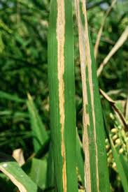
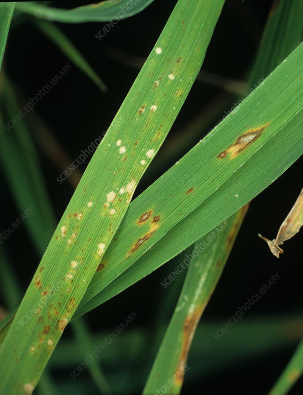
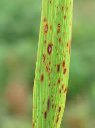
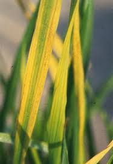
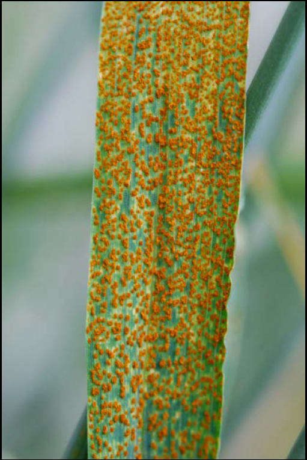
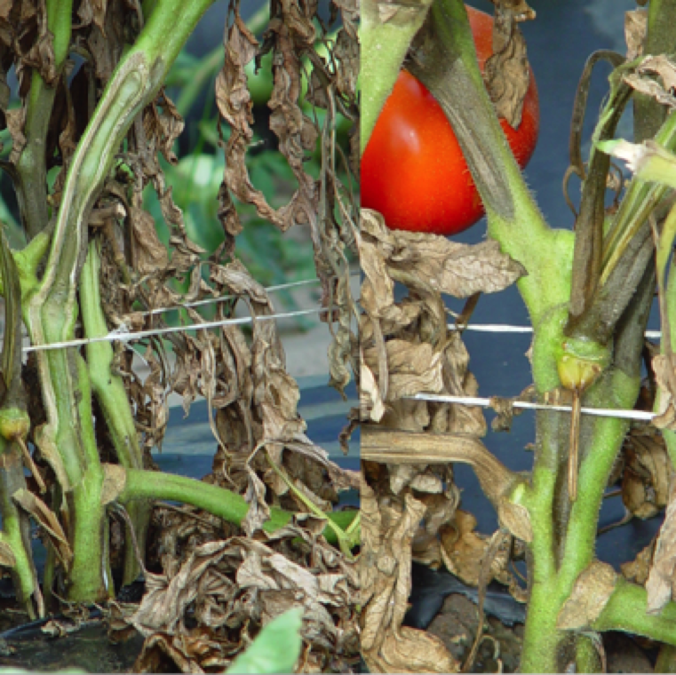

Common Diseases
Bacterial Blight

It makes rice leaves turn yellow with long, water-soaked streaks. The leaves look dry and wilted as the disease spreads.
Cause : It happens due to dirty or infected water, wounds on leaves, and warm, wet weather. The bacteria enter through cuts or damaged parts of the plant.
Leaf Blast

Leaves get diamond-shaped or oval grayish spots with dark edges. These spots can grow bigger and cause holes in the leaves.
Cause : This disease happens when the weather is cool and rainy, and there is too much nitrogen fertilizer. Water stays on leaves, helping the fungus grow.
Brown Spot

You will see small, round brown spots all over the rice leaves. The spots sometimes have a yellow border around them.
Cause : It occurs when the plant does not get enough nutrients (like potassium) and the weather is humid. Poor soil and unhealthy plants are more at risk.
Tungro Virus

Rice plants look yellow-orange and stunted, with thin and dry leaves. The whole plant looks unhealthy and smaller than normal.
Cause : It spreads when tiny insects (leafhoppers) feed on infected plants and carry the virus to healthy ones. It mostly happens in tropical climates.
Rust Disease

You see tiny orange to reddish-brown powdery spots (like rust) on the surface of the leaves. These spots can spread and cover large parts of the leaf.
Cause : Rust appears when the weather is warm and moist for a long time. The fungus spreads through air and lands on wet leaves, starting the infection.
Fusarium wilt

You notice yellowing and wilting of the lower leaves first, which then spreads upward. The plant may look dry or stunted even though the soil has enough water.
Cause : Fusarium wilt is caused by a soil-borne fungus that enters through the roots. It thrives in warm, moist soil and blocks water flow inside the plant.